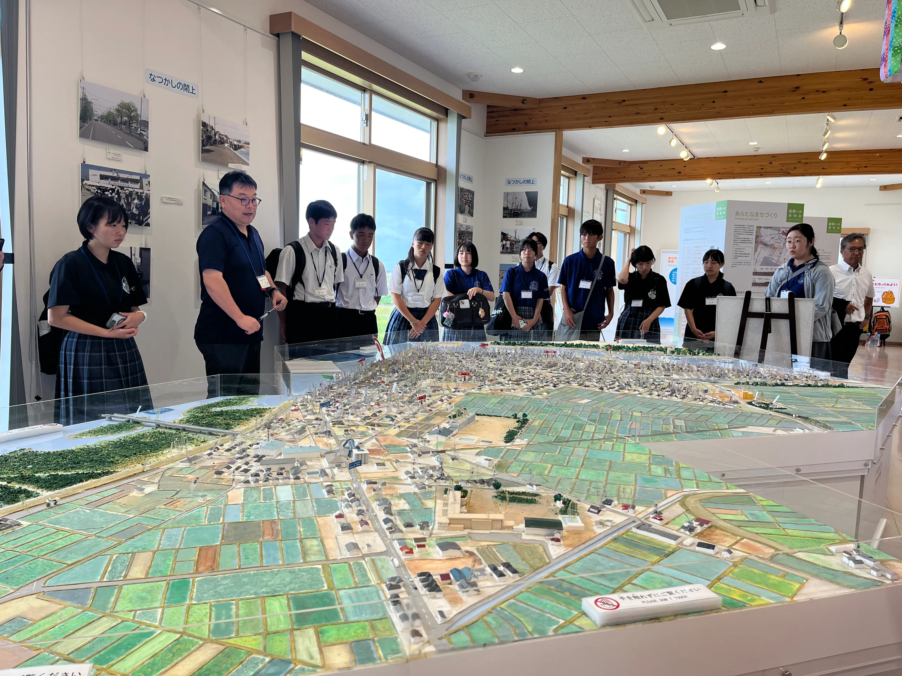
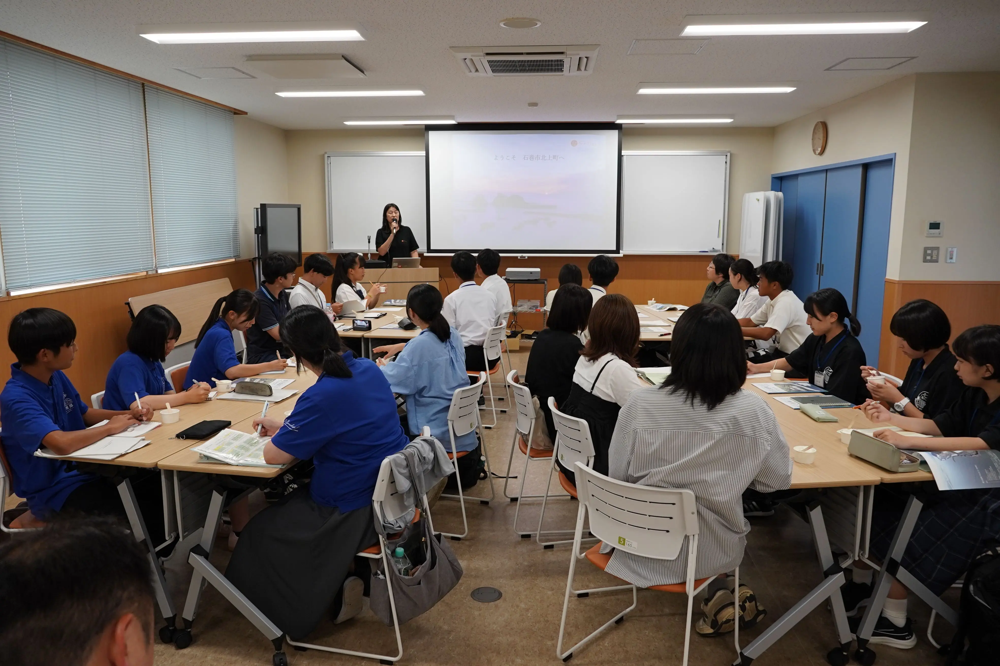
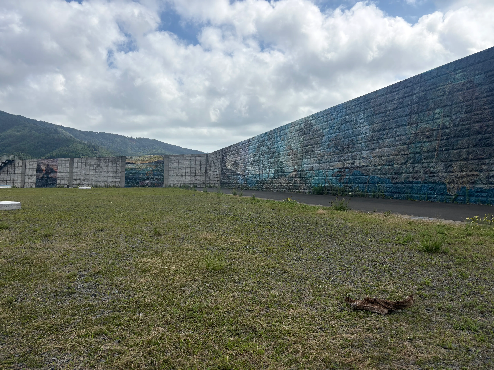
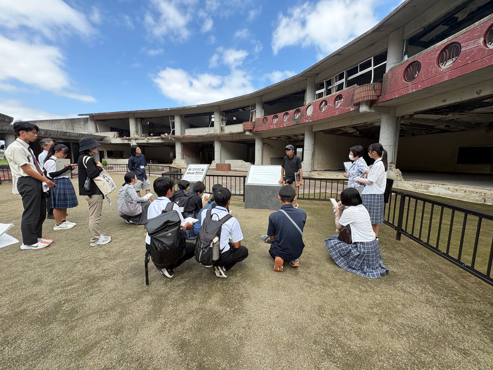
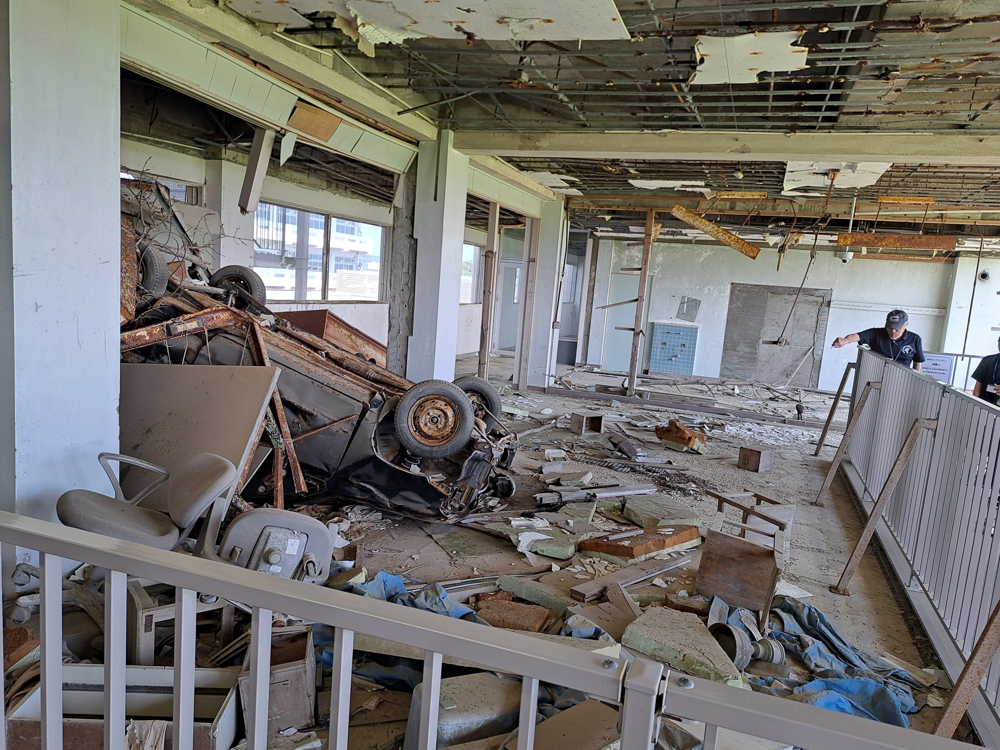
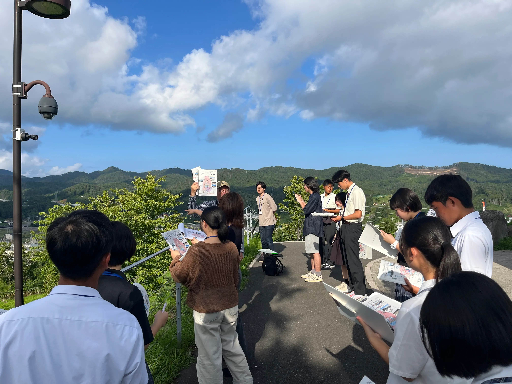
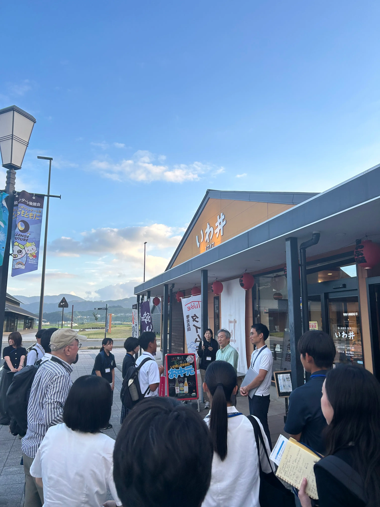
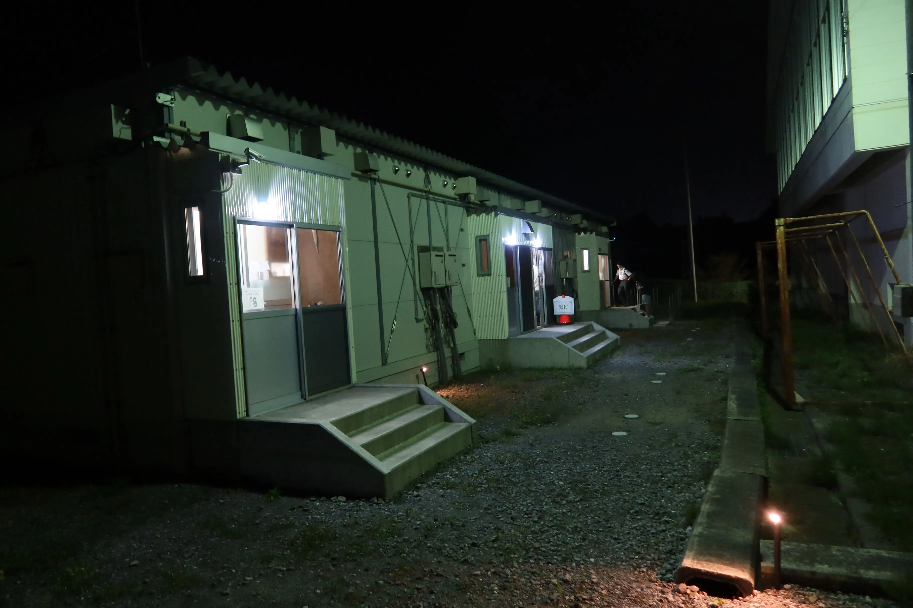
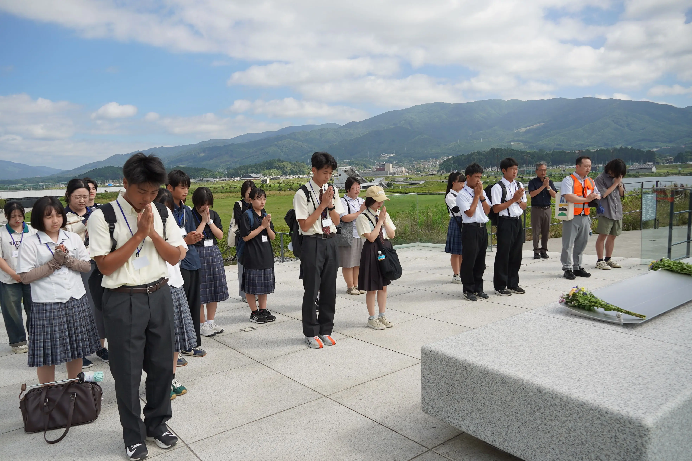
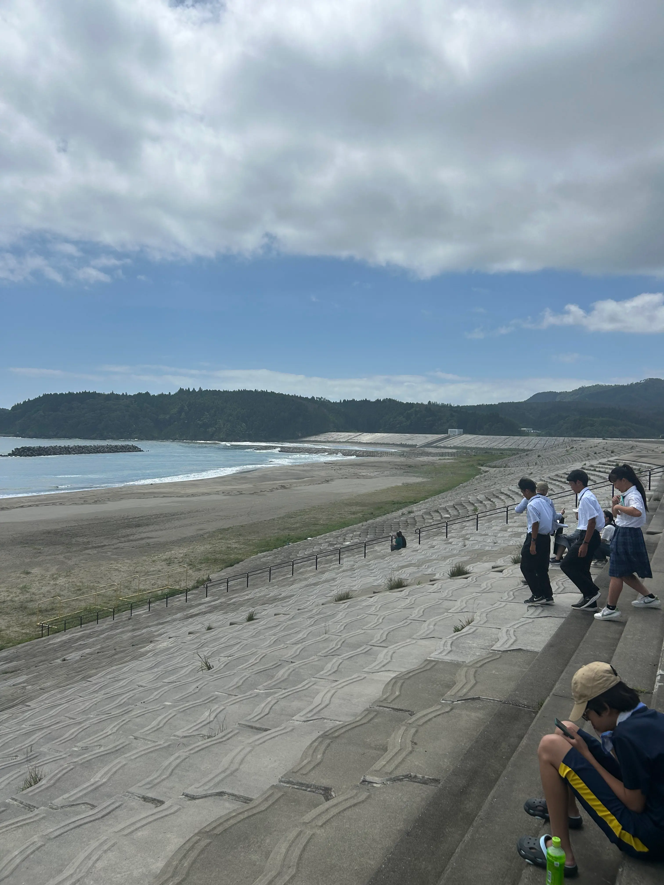

| 12:00-14:00 | 宮城県名取市 | 閖上かわまちづくり |
|---|---|---|
| 15:00-17:00 | 宮城県石巻市 | ウィアーワン北上（震災伝承プログラム～復興プロセス） |
| 8:50-9:20 | 宮城県石巻市 | 雄勝（リアス海岸 L1 防潮堤） |
|---|---|---|
| 9:30-10:40 | 宮城県石巻市 | 震災遺構大川小学校（大川小学校の避難行動） |
| 13:00-14:50 | 宮城県気仙沼市 | 震災遺構・伝承館 |
| 13:00-16:30 | 宮城県気仙沼市 | 津波高(三陸道の橋脚)、復興まちづくり |
| 16:50-18:20 | 岩手県陸前高田市 | 陸前高田市の震災と復興まちづくり |
| 岩手県陸前高田市 | 仮設住宅体験館 宿泊 |
| 8:00-9:50 | 岩手県陸前高田市 | 高田松原パーク・いわてTSUNAMIメモリアル |
|---|---|---|
| 10:20-11:50 | 宮城県気仙沼市 | 大谷海岸・小泉海岸海水浴場 |

語り部から学ぶ、あの日の避難
名取市震災復興伝承館では、発災直後、消防団の一員として避難の呼びかけを行った語り部の方から、避難時の様子を伺いました。 閖上地区では、昭和三陸津波でも人的被害がなかったことなどから「津波は来ない」という安全神話があり、住民の防災意識は必ずしも高くなかったそうです。 大津波警報が発表され、予想される津波の高さも引き上げられていたものの、防災行政無線の故障や道路の寸断、車で避難する人々による渋滞など、さまざまな要因が重 なり、住民の1割以上の方が命を落としました。また、地震発生から津波到達まで1時間6分という時間があったことが、一度避難した人 が自宅などへ戻る「戻り避難」にもつながりました。東日本大震災の教訓から、「想定外」をも見越して、命を守るための備えを行うことの大切さを学びました。

話し合いで築いた十三浜の復興
石巻市北上地区では、津波が北上川を河口から約49kmも遡上し、 沿岸部を中心に家屋や水産業施設の大半が被災する甚大な被害を受けました。 十三浜では、13の漁村集落それぞれの暮らしの単位を大切にしながら、 抽選などによらず、住民同士の話し合いを重ねて復興まちづくりの合意形成を 進めてきました。一方で、人口が減少し、子どものいる世帯も少なくなる中、 分散した集落で暮らし続けることの不便さや、防災を重視して整備された防潮堤に よる、慣れ親しんできた景観の変化など、新たな課題も実感しているといいます。 復興とはさまざまな選択の連続であるからこそ、将来世代を見据え、災害が起こる 前から地域の将来像や復興の方向性を考えておく「事前復興」の重要性を改めて学び ました。

巨大防潮堤との共存のありかた
宮城県石巻市雄勝地区は、東日本大震災の際に最大約20メートルの津波に見舞われた地域です。 復興事業の一環として、海岸線沿いには高さ約10メートルの防潮堤が建設されました。現在では、 この大きな防潮堤を舞台に「海岸線の美術館」というプロジェクトが展開されており、壁面には多様な壁画が描かれています。 視察をした高校生たちは、現地に立つことでその圧倒的な高さを身をもって実感していた様子でした。 また、描かれた壁画についても、高校生自らが地元で実施する防潮堤アートプロジェクトと比較しながら、 規模の違いや街に与える印象などについて考えていました。

即時判断の難しさと事前復興の理念
石巻市立大川小学校は、東日本大震災時に避難行動が難航し、 津波によって校内にいた多数の児童および教職員の方々が犠牲となった場所です。 震災遺構として保存されている校舎や語り部の方による講話を通じて、有事における 判断や避難行動決定の難しさと、平時における避難計画策定の重要性が浮き彫りと なりました。高校生たちから、語り部の方の話に対して高い当事者意識をもって 向き合い、単なる悲劇の共有にとどまらず、災害に強いまちづくりを見据えた 「事前復興」の重要性について深く考える様子が伺えました。

震災遺構から学ぶ避難行動
震災遺構である気仙沼向洋高校旧校舎を、語り部の方にご案内いただきました。 当時の瓦礫や壊れた設備などがそのまま残されている校舎内を見学しながら、 学校外に避難した高校生や学校内に残ったことで避難が遅れた人々、津波によって 流されてきた人々の当時の行動について、お話を伺いました。 また伝承館と同じ階上地区は、市内でも特に防災意識が高い地区であったものの、 指定避難場所であった「杉ノ下高台」が津波によって浸水し、多くの方が犠牲となり ました。ハザードマップや既往災害に基づく想定が必ずしも絶対ではないため、 自らの判断でより高い場所へ避難し続けること、そして日頃からその意識を持っておくことの重要性を学びました。

復興した街と津波に備えるまちづくり
三陸沿岸道路の気仙沼湾横断橋の橋脚で、東日本大震災時の津波の到達高を確認しました。 また、市内の内湾広場や復興祈念公園から復興が進んだ街の様子を見学しました。 漁業が市の経済を支える重要な産業であり、海と生活を切り離すことが難しい 気仙沼市が、震災後どのように街を再建してきたのか、また、津波が発生した際の 被害を抑えるために、どのようなまちづくりの工夫が行われているのかについて 学びました。

陸前高田に学ぶ、復興まちづくりと合意形成
陸前高田市では、大規模な高台移転と土地の嵩上げ事業によって再建が進めら れた街並みを視察しました。大学等の専門家や地域住民、行政が一体となり、進 められた合意形成のプロセスについて学びました。また、地元の方より、発災当 時の状況や避難行動、その後の復興過程に関するお話も伺いました。震災直後か ら避難生活に至るまでの具体的な出来事や、地域の中で生じた精神的・社会的な 課題など、数値や報道だけでは捉えきれない「現場の生の声」に触れる貴重な時 間となり、街の歴史や名称を未来へ繋ぐ工夫や、持続可能な土地利用・景観形成 のあり方についても深く考えることが出来ました。

仮設住宅で体感する避難生活
実際の仮設住宅の構造や住環境に宿泊する体験を しました。緊急対応期における住まいの確保という 側面だけでなく、施工による居住性や遮音性の違い、 長引く避難生活での収納や間取りの課題について身を もって学びました。今後の災害時における仮設住宅の 供給体制や、QOLを支える環境づくりの重要性を実感 しました。

祈りと防災を両立する空間づくり
高田松原津波復興祈念公園を訪問し、震災の犠牲となられた方々に追悼と 祈りを捧げました。園内の「いわてTSUNAMIメモリアル（東日本大震災津 波伝承館）」では、震災の事実と教訓を学びました。また、敷地内に整備 された防潮堤や水門などの巨大防災インフラを視察し、防災機能の考え方 の違いを学ぶとともに、防災機能と開放的な景観の維持と祈りの場の演出 を両立させる空間設計についても考えを深めました。

二つの海岸から考える、防潮堤と合意形成
防潮堤の建設を巡り異なるプロセスを辿った小泉海岸および 大谷海岸を訪問しました。巨大な防潮堤の建設に伴う住民意識の違いや、 従来のトップダウン型アプローチにおける課題、住民対話による合意形成 の難しさについて比較検討を行いました。地域ごとに異なる防潮堤の構造 や海岸景観、そこでの人々の過ごし方を実際に目にすることで、安全性の 確保と地域住民の暮らし・自然環境との調和について再考する機会となり ました。